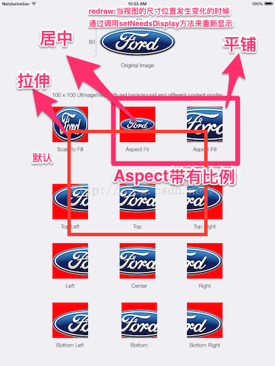

1. UIImageView
1.1. UIImageView常见属性
- UIImage *image 显示的图片
- NSArray *animationImages 显示的动画图片
- NSInteger animationRepeatCount 动画播放次数(默认0是无限播放)
- NSTimeInterval animationDuration 一次动画时长
Bool clipsToBounds 是否裁剪多余的部分
UIViewContentMode contentMode 
毛玻璃效果
UIToolbar *toolb = [[UIToolbar alloc]init];
toolb.frame = imageV.bounds;
//toolb.frame = imageV.frame;
toolb.barStyle = UIBarStyleDefault;
toolb.alpha = 0.9;你好ha a
[imageV addSubview:toolb];
[self.view addSubview:imageV];
为什么toolb.frame = imageV.bounds而不是frame? : 因为 imageV.frame可能会变,但是imageV.bound是不会变的(x,y永远是0,玻璃效果全覆盖,宽高也不变,这就保证了永远全覆盖在图片上了)
1.2. 设置UIImageView的frame方式
//1.
imageView.frame = CGRectMake(100,100,267,400);
//2.
imageView.frame = (CGRect){{100,100},{267,400}};
//3.
UIImage *image = [[UIImage alloc]init];
imageView.frame = CGRenctMake(100,100,image.size.width,image.size.height);
imageView.image = image;
//4.(常用)
UIImageView *imageView = [[UIImageView alloc]initWithFrame:CGMake(100,100,267,400)];
imageView.image = image;
//5
UIImageView *imageView = [[UIImageView alloc]initWithImage:@"1")];(默认有尺寸,尺寸就是图片的尺寸)
ImageView.center = CGPointMake
(self.view.frame.size.width * 0.5,self.view.size.height * 0.5);//(位置)